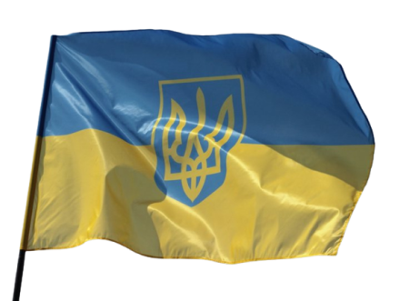

- Приймаючи участь ти можеш виконувати як один так і всі блоки олімпіади. Не хвилюйся, якщо не встиг виконати один із них. Кожен блок оцінюється окремо.
- Олімпіаду виконує кожен учень самостійно протягом 45 хвилин.Час може бути як продовжений так і скорочений зважаючи на зовнішні чинники.
- Перед початком виконання уважно прочитай інструкцію до роботи, якщо чогось не розумієш запитай у вчителя.
- При виявленні помилки або неточності не забудь повідомити вчителя.
- Важливо дотримуватися академічної доброчесності, тому відповідально підійди до цього.
- Виконане завдання потрібно зберігати на робочому столі. Назва папки: Клас_Прізвище_Імя
- Для вибору завдання нажми по одному з розділів.Успіхів.
Перегляньте уважно карту та продумайте, про які області зможете розповізти? Що цікавого там можна побачити?
Твоє завдання розробити презентацію на тему:
"Україна єдина" 
На першому слайді підпиши хто розробив та розмісти тему.
На другому слайді розмісти карту
3-6 слайди, мають показувати нам по одній області.
Додаткові завдання:
- Створи кнопки переключення слайдів
- Презентацію можна завершити лише нажавши на Х
- Час презентації: 4с 1 слайд.
Нижче вам запропонована галерея зображень, які ви можете використовувати:


Більше готових зображень ти можеш завантажити за посиланням Нажми на мене!
Для побудови логотипу можна використовувати:
Після виконови побудови збережіть ваш дизайн у папку:"Ваше прізвище"
Нажми на прапорець для запуску гри у Scrath 3.
Зіграй та ознайомся з структурою гри.
Подумай, що з нею не так? Щоб ти додав(-ла)?
Перейди за посиланням та спробуй зібрати гру автора: Нажми на мене!
Після завершення збирання блоків, незабудь додати щось від себе.
Збережи роботу в свою папку. Файл-вивантажити-"моя папка"
Якщо це було перше твоє завдання, сміло рухайся далі.В тебе добре виходить.
В. Сухомлинський